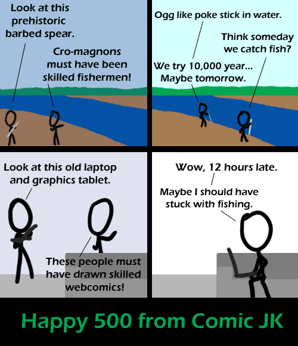

Comic JK 500
When I Feel Like It
⇤
<
?
>
⇥

⇤
<
?
>
⇥
Forum
.
RSS
.
Digg
.
Facebook
.
Reddit
.
Twitter
.
Stumbleupon
Enter your thoughts on number 500 here. Please, no spamming, trolling, or arbitrary milestones. Look at this old pile of dorky college boys! Your mother must have had lots of seduction power! Confusing future archaeologists? What do you think Stone Henge was for...? Maybe this is the point of the comic, but for accuracy, let the world know that primitive spear fishing is incredibly easy if you have a little patience and ability to stand motionless. The fish will even hide in your shadow. It is so easy to spear fish that it is illegal in my area due to the potential loss of fish. 10,000 years, and Ogg still hasn't learned that he needs to aim. >Perhaps Ogg hasn't figured out what refraction is. That's the other trick to spear fishing - the image is slightly off where the fish actually is because of the air-water interface. >>Ogg is 10,000 years old? wow... I have a plan to mess with future archaeologists. Care to help? It's very complex and extremely elaborate. > Does it involve a time machine? That always messes them up. >> Wait, why do you know... ? Gratz, on comic 500! ...One of your better ones. This one has been done over to many times. Still gave me a chuckle thou. > Syntax error! What skills could a webcomic have? > WIN >WIN^2 - Negative Twoth >>Twoth=Loss >>> Making webcomics is a good skill to have >>>> Actually, the image says that the webcomics were skilled, not the creators. >Nunchuck skills? "Look at this prehistoric barbed spear." "Cro-magnons must have had really itchy backs!" > "Ogg like bonk stick on back." cheers!